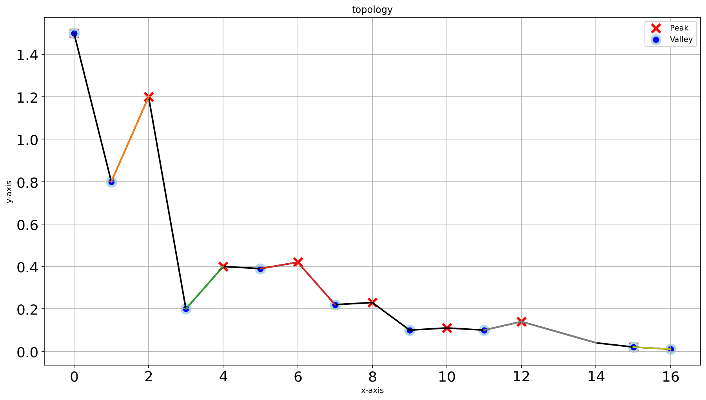
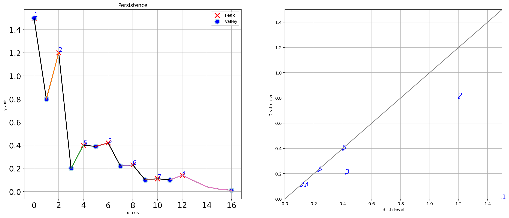
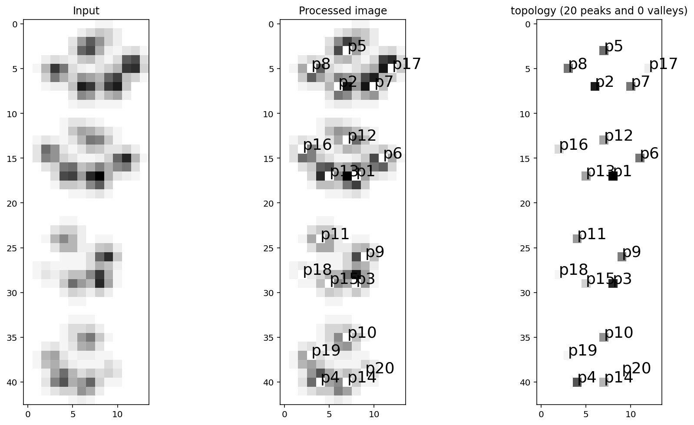
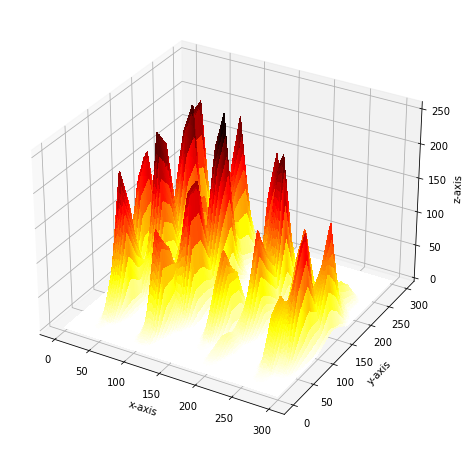
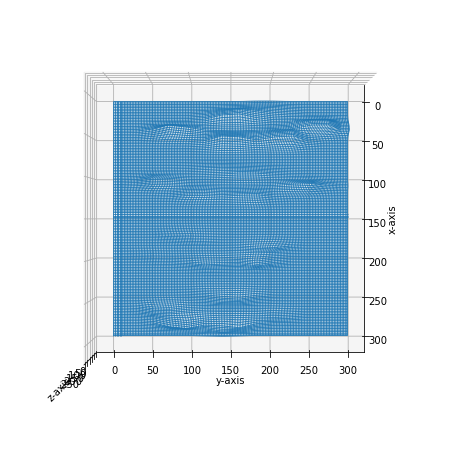
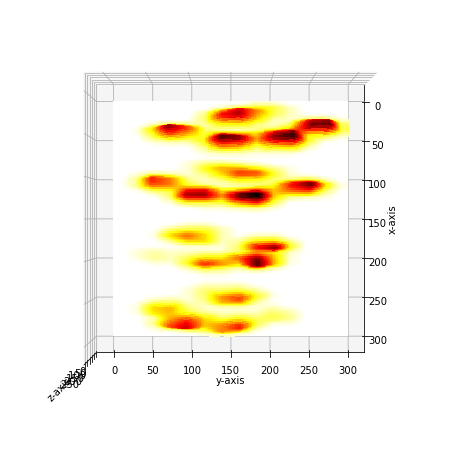

Plots
This section provides comprehensive documentation of the visualization capabilities in the findpeaks library. The library offers rich plotting functionality for both 1D and 2D data analysis, including preprocessing visualization via findpeaks.findpeaks.findpeaks.plot_preprocessing(), persistence diagrams via findpeaks.findpeaks.findpeaks.plot_persistence(), and 3D mesh plots via findpeaks.findpeaks.findpeaks.plot_mesh().
One-dimensional Plots
The findpeaks library provides specialized plotting functions for 1D data analysis, including preprocessing visualization and persistence diagrams using findpeaks.findpeaks.findpeaks.plot1d().
Pre-processing visualization
The pre-processing visualization for 1D data is based on the interpolation function: findpeaks.interpolate.interpolate_line1d(). This allows users to visualize how interpolation affects the data before peak detection.
# Import library
from findpeaks import findpeaks
# Initialize with interpolation
fp = findpeaks(method='topology', interpolate=10)
# Import example
X = fp.import_example("1dpeaks")
# Detect peaks
results = fp.fit(X)
# Plot
fp.plot()
 |
|

Persistence diagram
The persistence plot is generated using the function: findpeaks.findpeaks.findpeaks.plot_persistence(), and provides two complementary visualizations. The left plot shows detected peaks with their ranking (1=most significant), while the right plot displays the homology-persistence diagram. See the topology section for detailed explanations of persistence analysis.
# Plot persistence diagram
fp.plot_persistence()
 |
Two-dimensional Plots
The findpeaks library provides comprehensive visualization tools for 2D data analysis, including preprocessing pipelines via findpeaks.findpeaks.findpeaks.plot_preprocessing(), detection results via findpeaks.findpeaks.findpeaks.plot2d(), and 3D mesh visualizations via findpeaks.findpeaks.findpeaks.plot_mesh().
2D Pre-processing visualization
The pre-processing plot is specifically designed for 2D arrays (images) using the function: findpeaks.findpeaks.findpeaks.plot_preprocessing(). The plot dynamically adjusts the number of subplots based on the user-defined preprocessing steps, providing a clear visualization of each transformation.
# Import library
from findpeaks import findpeaks
# Initialize with peak detection only
fp = findpeaks(method='topology', whitelist=['peak'])
# Import example
X = fp.import_example("2dpeaks")
# Detect peaks
results = fp.fit(X)
# Plot preprocessing steps
fp.plot_preprocessing()
|

Main results plot
- The plot function
findpeaks.findpeaks.findpeaks.plot()displays the three major analysis steps: Input data visualization
Final pre-processed image
Peak detection results
# Plot comprehensive results
fp.plot(figure_order='horizontal')
 |
Persistence diagram for 2D data
The persistence plot for 2D data is generated using the function: findpeaks.findpeaks.findpeaks.plot_persistence(), and provides two complementary visualizations. The left plot shows detected peaks with their ranking (1=most significant), while the right plot displays the homology-persistence diagram. See the topology section for detailed explanations of persistence analysis.
# Plot persistence diagram
fp.plot_persistence()
|

3D mesh visualization
The mesh plot can be easily created using the function: findpeaks.findpeaks.findpeaks.plot_mesh(). It converts the 2D image data into an interactive 3D mesh visualization, providing enhanced spatial understanding of the data structure.
# Create 3D mesh plot
fp.plot_mesh()
# Rotate to create a top-down view
fp.plot_mesh(view=(90,0))
|
 |
 |
 |